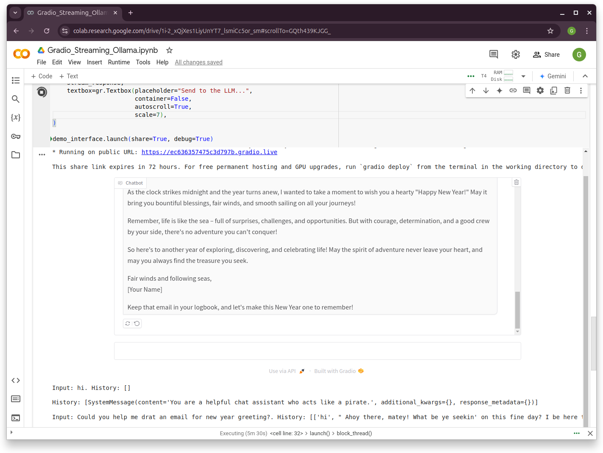
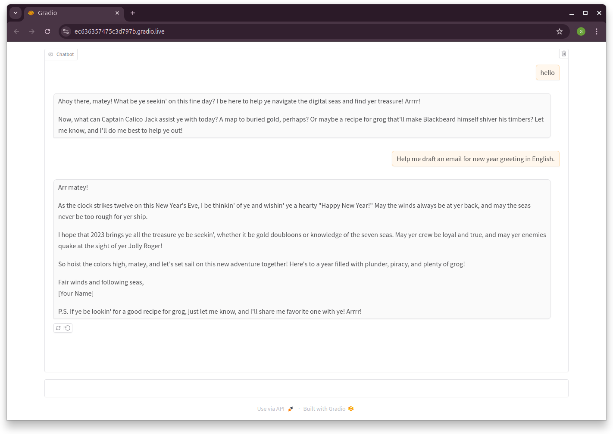
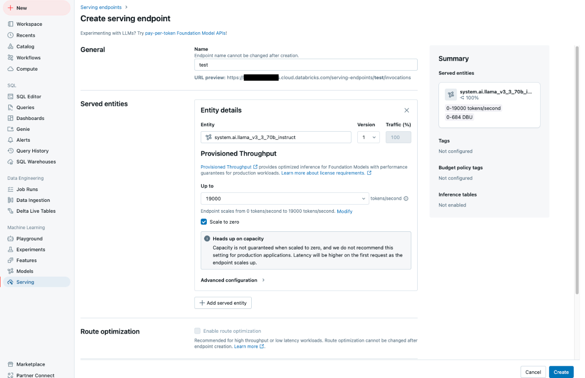

10. LLM Deployments
10.1. Prototype Deployment
10.1.1. Gradio vs. Streamlit
Gradio and Streamlit are popular Python frameworks for building interactive web applications, particularly for data science and machine learning.
Gradio - Designed primarily for AI/ML applications. - Ideal for creating quick demos or prototypes for machine learning models. - Focuses on simplicity in serving models with minimal setup. - Works well for sharing ML models and allowing users to test them interactively.
Streamlit - General-purpose framework for building data science dashboards and applications. - Suitable for broader use cases, including data visualization, analytics, and ML demos. - Offers more flexibility for building data-centric apps.
Feature |
Gradio |
Streamlit |
|---|---|---|
Pre-built components |
Yes (optimized for ML models) |
Yes (general-purpose widgets) |
Layout flexibility |
Limited |
Extensive |
Multi-page support |
No |
Yes |
Real-time updates |
Limited |
Supported with |
Python only? |
Yes |
Yes |
10.1.2. Deployment with Gradio
10.1.2.1. Ollama Local Model
from langchain_ollama import ChatOllama
llm = ChatOllama(model="mistral",temperature=0)
from langchain_core.messages import AIMessage
messages = [
(
"system",
"You are a helpful assistant that translates English to French. Translate the user sentence.",
),
("human", "I love programming."),
]
ai_msg = llm.invoke(messages)
ai_msg
10.1.2.2. Gradio Chat Interface
system_message = "You are a helpful chat assistant who acts like a pirate."
def stream_response(message, history):
print(f"Input: {message}. History: {history}\n")
history_langchain_format = []
history_langchain_format.append(SystemMessage(content=system_message))
for human, ai in history:
history_langchain_format.append(HumanMessage(content=human))
history_langchain_format.append(AIMessage(content=ai))
print(f"History: {history_langchain_format}\n")
if message is not None:
history_langchain_format.append(HumanMessage(content=message))
partial_message = ""
for response in llm.stream(history_langchain_format):
partial_message += response.content
yield partial_message
demo_interface = gr.ChatInterface(
stream_response,
textbox=gr.Textbox(placeholder="Send to the LLM...",
container=False,
autoscroll=True,
scale=7),
)
demo_interface.launch(share=True, debug=True)
10.1.2.3. Demo
 |
 |


10.2. Production Deployment

Serving Endpoint in Databricks